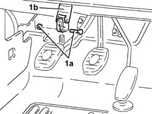
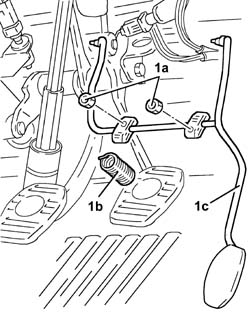
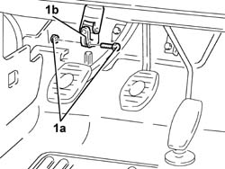
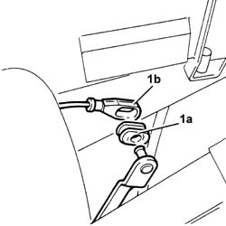
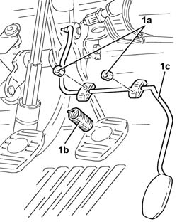
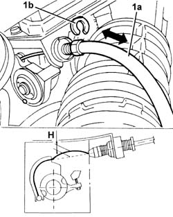

1068A15 accelerator pedal - r r for rhd versions
- Path
- Procedures > 10 ENGINE > 1068 ACCELERATOR CONTROLS > 1068A accelerator pedal control > 1068A15 accelerator pedal - r r for rhd versions
- Kind
- repair procedure (removal / refitting; the operation number is the code)
- Applies to
- engines: 1.6 TS , 1.8 TS, 2.5 V6, 2.4 JTD 10v; all production periods
- Interactive page
- https://sloeber94.github.io/elrnDB-a156/en/#/3237550
Applies to: engines: 2.5 V6; all production periods; only with equipment: Right hand drive and Heater
 Removing
Removing
 Refitting
RefittingMake sure that the ignition key is in the OFF position.
Disconnect the battery negative (-) terminal.
 | Name | Connector |
|---|---|---|
- | Battery |
Place the car with the wheels perfectly straight.
Mark the position of the steering wheel in relation to the upper steering column shroud.
1. Undo the fixing bolt (1a) and disconnect the lower steering control shaft (1b) from the power steering box.

Applies to: engines: 2.5 V6; all production periods; only with equipment: Right hand drive and Heater
Remove the brake light switch from its seat without disconnecting the electrical connection.
Withdraw the retainer and disconnect the accelerator pedal link from the potentiometer.
1. Undo the nuts (1a), prise out counterspring (1b) and remove the accelerator pedal (1c).

Applies to: engines: 2.5 V6; all production periods; only with equipment: Right hand drive and Heater
Refitting
RemovingFit the accelerator pedal with counterspring and fix it using the nuts.
Connect the accelerator pedal link to the potentiometer and secure it with its retainer.
Replace the brake light switch in its seat.
Connect the lower steering shaft to the power steering box and secure by tightening the bolt to the specified torque.
 | Fastening | Component | Ø | Value (daNm) |
|---|---|---|---|---|
- | Bolt | STEERING SHAFT JOINTS | M8 | Power assisted steering box side 1.9 - 2.1 |
When the accelerator pedal has been refitted, adjust it as described below.
Make sure that the ignition key is in the OFF position.
Connect the tool to the diagnostic socket and place the knob in position 3.
 | Name | Country |
|---|---|---|
- | MPX 97 switch | 1.806.365.000 |
Connect the Examiner diagnostic equipment.
Turn the ignition to the ON position.
Using the Examiner, enter the 'Parameters' environment.
Press 'Selection' and select the 'Accelerator position track 1' parameter.
Check that the potentiometer's calibration conforms to the specified values:
- during idling (accelerator pedal released), 8% ± 1%
- fully open (accelerator pedal fully depressed), 64.3% ± 1%
If the setting is not as specified, adjust the accelerator pedal travel by means of the accelerator pedal travel stop screw beneath the pedal.
Remove the diagnostic equipment.
Applies to: engines: 1.6 TS , 1.8 TS; all production periods; only with equipment: Right hand drive
Removing
RefittingEnsure that the ignition key is in stop position, then disconnect the battery negative terminal.
| Name | Connector |
|---|---|---|
- | Battery |
Place the car with the wheels perfectly straight.
Mark the position of the steering wheel in relation to the upper steering column shroud.
1. Unscrew bolt (1a) and disconnect lower steering shaft (1b) from the power steering box.

Applies to: engines: 1.6 TS , 1.8 TS; all production periods; only with equipment: Right hand drive
Remove the brake light switch from its seat without disconnecting the electrical connection.
1. Withdraw clip (1a) and disconnect accelerator pedal link (1b) from the accelerator pedal.

Applies to: engines: 1.6 TS , 1.8 TS; all production periods; only with equipment: Right hand drive
1. Undo the nuts (1a), disconnect the counterspring (1b) and remove accelerator pedal (1c).

Applies to: engines: 1.6 TS , 1.8 TS; all production periods; only with equipment: Right hand drive
Refitting
RemovingFit the accelerator pedal complete with reaction spring and fix it using the nuts.
Connect the accelerator cable to the accelerator pedal and secure with a clip.
Replace the brake light switch in its seat.
Connect the lower steering shaft to the steering box and tighten the bolt to the specified torque.
| Fastening | Component | Ø | Value (daNm) |
|---|---|---|---|---|
- | Bolt | STEERING SHAFT JOINTS | M8 | Power assisted steering box side 1.9 - 2.1 |
Connect the battery terminal (-).
1. Adjust the accelerator cable (1a) using the clip (1b) so that with the pedal released the throttle is completely closed and the cable clearance "H" is 5mm.

Applies to: engines: 1.6 TS , 1.8 TS; all production periods; only with equipment: Right hand drive
Check that the end travel stop on the throttle body is in contact when the pedal is fully depressed (throttle open).
If not, adjust the accelerator pedal travel stop.
Applies to: engines: 2.4 JTD 10v; all production periods; only with equipment: Right hand drive
Removing
RefittingEnsure that the ignition key is in the OFF position, then disconnect the negative (-) battery terminal.
| Name | Connector |
|---|---|---|
- | Battery |
Place the car with the wheels perfectly straight.
Mark the position of the steering wheel in relation to the upper steering column shroud.
1. Undo the fixing bolt (1a) and disconnect the lower steering control shaft (1b) from the power steering box.
Applies to: engines: 2.4 JTD 10v; all production periods; only with equipment: Right hand drive
Remove the brake light switch from its seat without disconnecting the electrical connection.
Withdraw the retainer and disconnect the accelerator pedal link from the potentiometer.
1. Undo the nuts (1a), prise out counterspring (1b) and remove the accelerator pedal (1c).
Applies to: engines: 2.4 JTD 10v; all production periods; only with equipment: Right hand drive
Refitting
RemovingFit the accelerator pedal with counterspring and fix it using the nuts.
Connect the accelerator pedal link to the potentiometer and secure it with its retainer.
Replace the brake light switch in its seat.
Connect the lower steering shaft to the power steering box and secure by tightening the bolt to the specified torque.
| Fastening | Component | Ø | Value (daNm) |
|---|---|---|---|---|
- | Bolt | STEERING SHAFT JOINTS | M8 | Power assisted steering box side 1.9 - 2.1 |
Connect the negative (-) battery terminal.
Connect Examiner and check the calibration parameters of the valve and the throttle. If the values are not within the specified range, then regulate the acclerator pedal travel adjustment screws under the pedal itself.